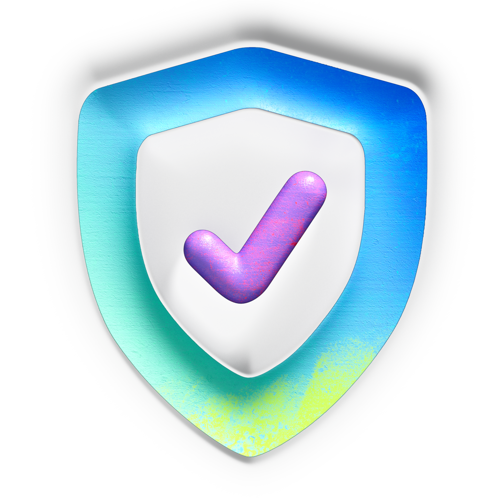
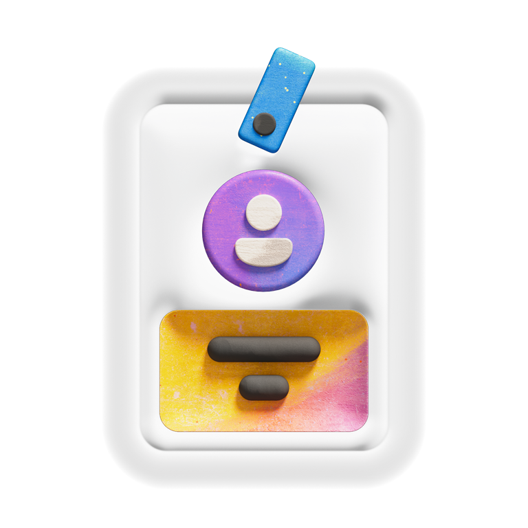
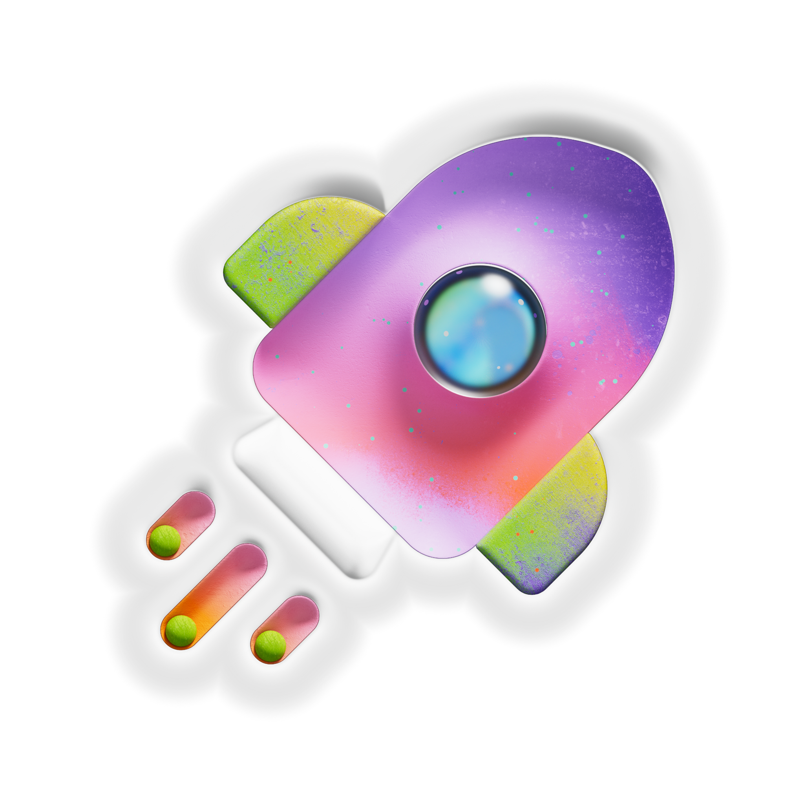
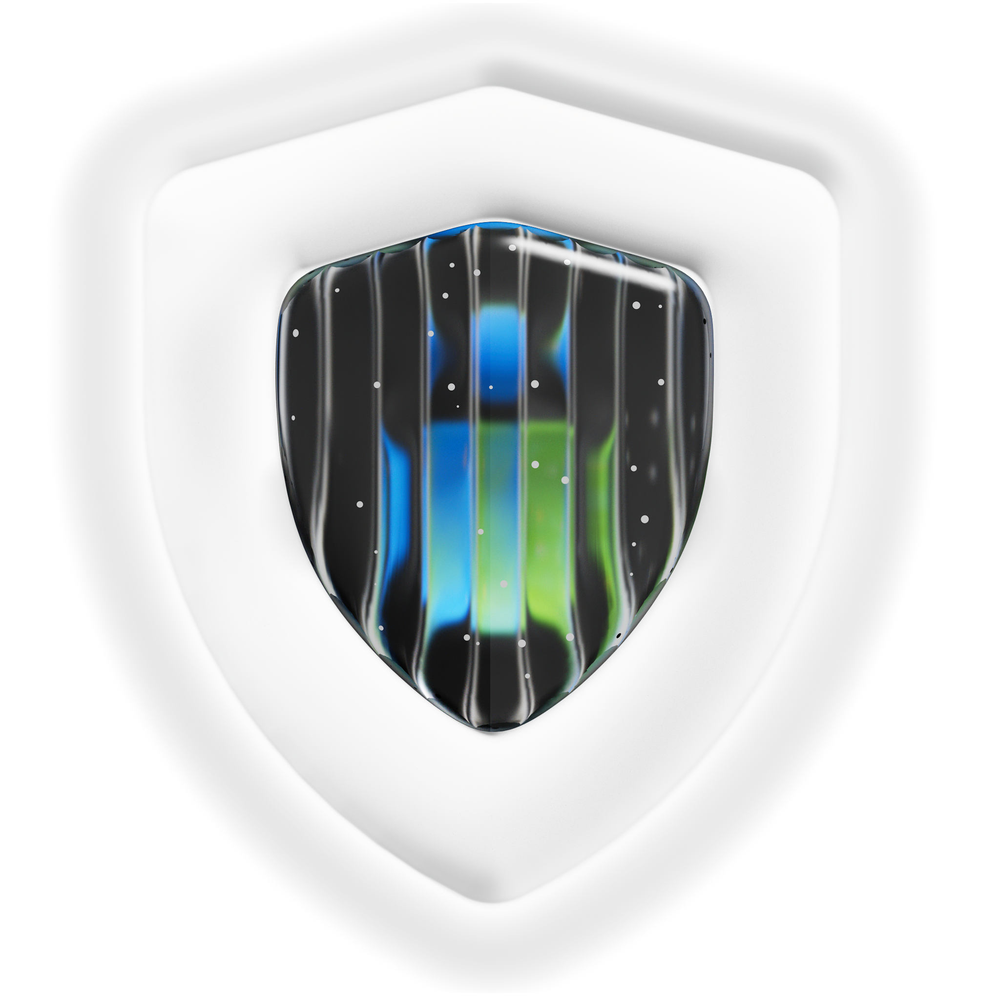
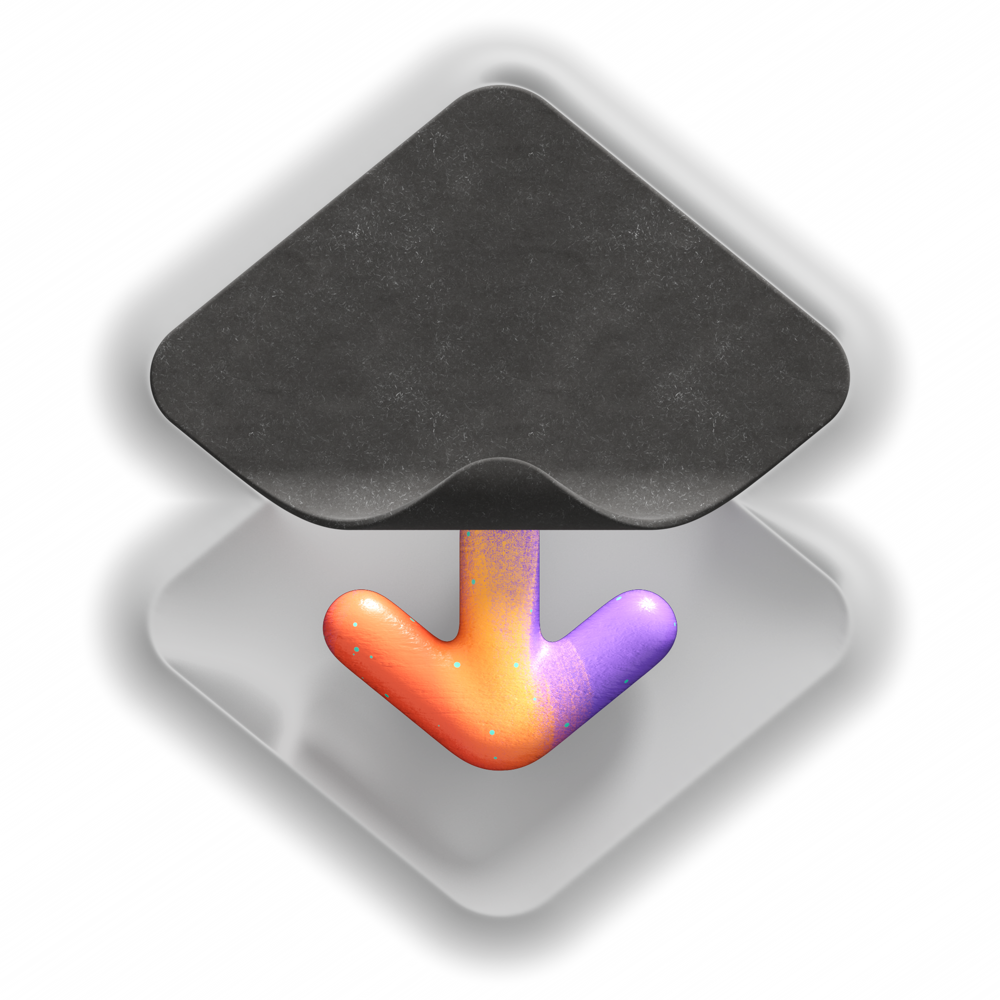
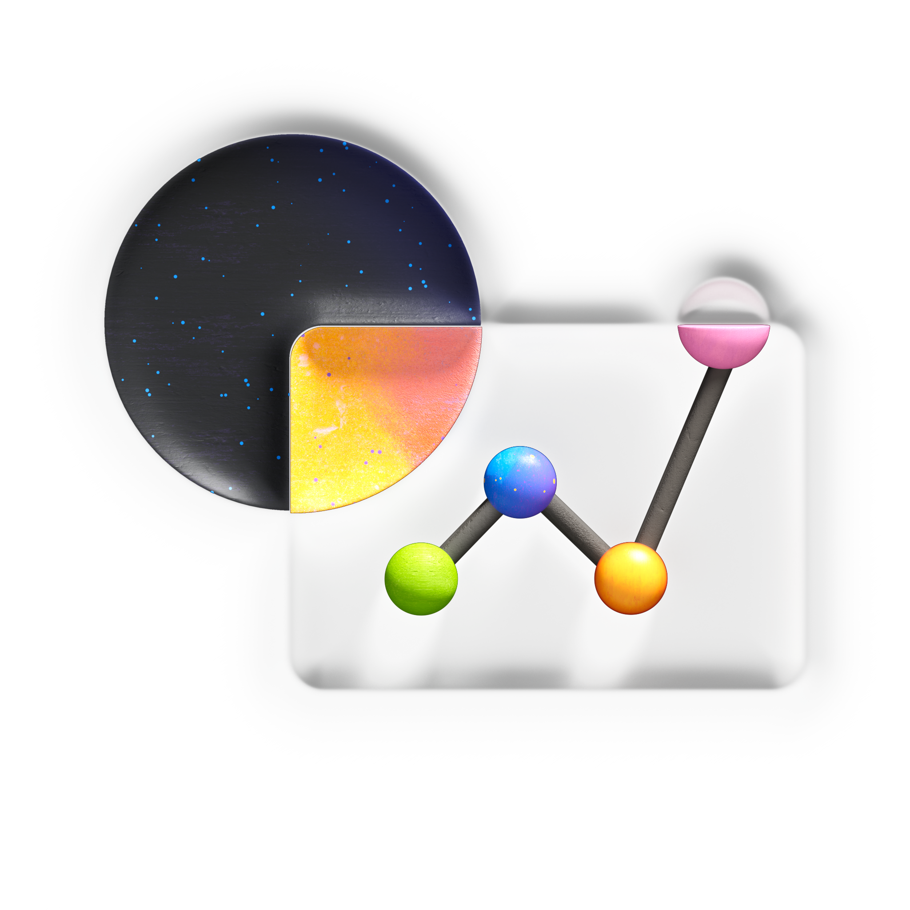
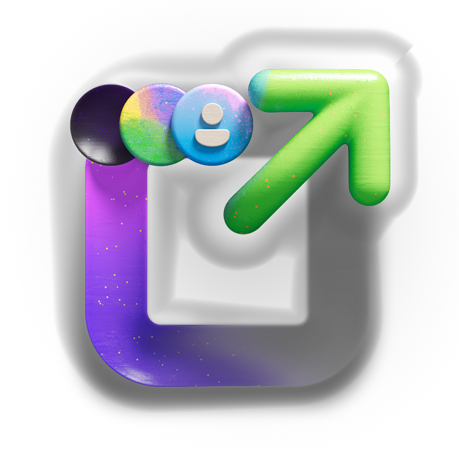
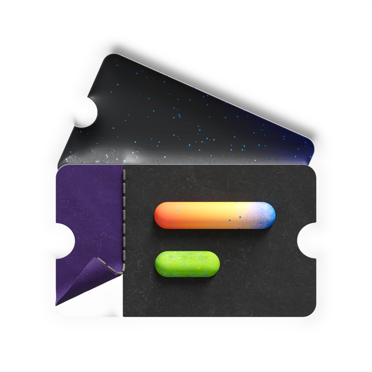

Step one
Verify identity & code
Confirm who you are and that your binaries are authentically yours through code signing.
Verify your identity and code authenticity to earn a Blue Badge — so your apps install without friction and build lasting trust with users, wherever you distribute.
TDP is a Microsoft initiative that lets developers become verified and trusted by proving their identity and code authenticity. The result: faster publishing, fewer restrictions, and a smoother install experience that improves user trust in high-quality apps.

Confirm who you are and that your binaries are authentically yours through code signing.

Become a Verified Developer with a Blue Badge that signals authenticity across Windows.

Faster publishing and fewer restrictions — distribute inside or outside the Store.
Set up your Microsoft developer identity to get started — it takes just a few minutes.
Provide your code signing certificate so we can confirm your releases are authentically yours.
Earn trusted status and your Blue Badge — unlocking frictionless installs and analytics.
Six benefits that compound — trust you build once follows every app, release, and certificate.

Your developer identity is visible across Windows, and trust persists across every app and release.

No SmartScreen or SAC warnings for verified developers — users install without interruption.

Crash analytics and app health signals — previously missing for Win32 developers.

Declare authorized download sources to support anti-piracy and trust attribution.
Reputation persists across apps and certificates — no need to rebuild trust per app.

Crash analytics, source attribution, and early access & support (proposed).
“Trust shouldn't have to be rebuilt with every release. With a Blue Badge, users install with confidence — and that confidence follows you across every app you ship.”
The Trusted Developer Program · Windows